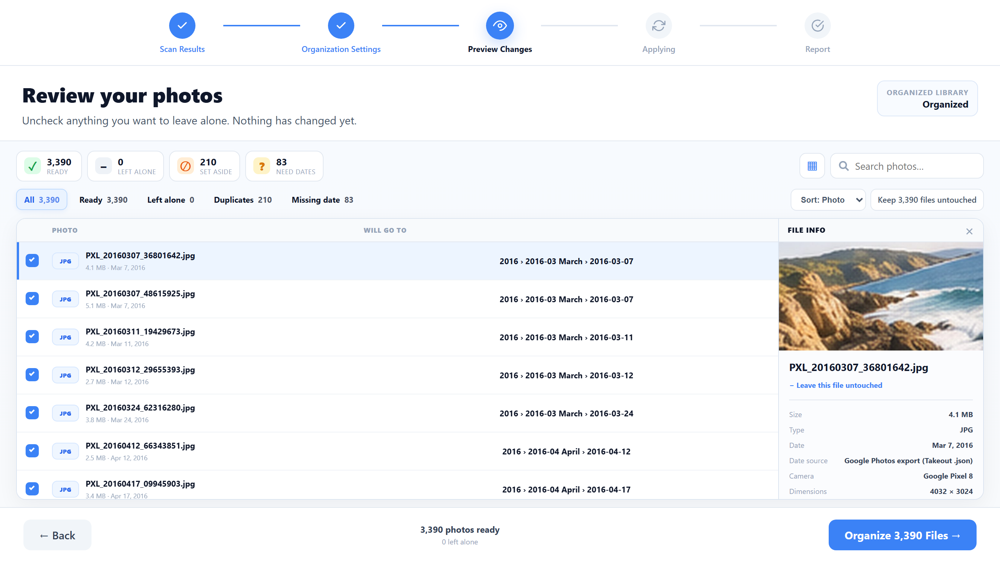

macOS
$19.99 USD
One-time purchase for macOS 14 Sonoma or later, Apple Silicon and Intel. Signed and notarized by Apple.
Prefer the Mac App Store? Get it therePhoto & video organizer for Mac and Windows
Foldiq sorts your photos and videos by capture date and flags duplicates. Review the destination of each file before you apply any changes.
See Foldiq in action ↓
See it in action
Scan, preview every move, organize, and undo. Shown on Windows with a sample library; the Mac app follows the same steps.
App tour
Follow a sample library through Foldiq for Windows, from choosing folders to the final report.
Foldiq never moves a single file until you've reviewed and confirmed every planned change.
Drag any folder — or multiple folders — onto Foldiq. Desktop handles nested subfolders plus unencrypted ZIP, RAR, and 7z archives.
It reads the real EXIF capture date, GPS location, and filename for every file. Duplicates are detected using SHA-256 hashing.
A full table shows every planned file move — source, destination, date, size. Filter and inspect before anything changes.
Confirm the plan to organize your files. The report includes the option to undo the run.
Whether you have 500 photos or 50,000, Foldiq handles it safely.
Foldiq reads the real capture date from metadata — not the file creation date. Photos shared via WhatsApp or Telegram stay in true chronological order.
Exact duplicates are found via SHA-256 hashing. Probable duplicates — same name, similar size, close timestamp — are flagged separately so you decide what to keep.
Foldiq records the file changes in an undo manifest so you can reverse an organization run from the report.
Select several source folders in one scan. Foldiq merges and organizes them together, removing duplicates across all sources.
Drop in an unencrypted desktop archive and Foldiq extracts the media on the fly while leaving the original compressed file untouched.
When you enable location naming, Foldiq can add the city and state to folder names using Apple Maps services on Mac or approximate OpenStreetMap lookup on Windows.
Choose the folder depth that fits your style — from simple yearly buckets to a full date + location hierarchy.
2026/ 2026-05 May/ 2026-05-18 Herndon VA/ IMG_4821.jpg IMG_4822.HEIC
2026/ IMG_4821.jpg 2025/ DSC_0001.NEF 2024/ IMG_0042.jpg
2026/ 2026-05 May/ IMG_4821.jpg 2026-04 April/ DSC_0001.NEF
2026/ 2026-05 May/ 2026-05-18/ IMG_4821.jpg 2026-05-19/ IMG_4822.HEIC
No. Foldiq only moves and organizes your files into folders — it never edits or deletes the photos themselves. You see a complete preview of every planned change before anything happens, and a one-click undo restores everything to its original location.
Yes. There's a native app for both macOS (14 Sonoma or later, Apple Silicon & Intel) and Windows 10/11 64-bit. Just pick your platform on the download button.
Foldiq is a one-time purchase of $19.99 USD for Mac or Windows when you buy it here, with no subscription. The Mac version is also on the Mac App Store, which shows the price for your region.
No. Foldiq never uploads your photos, videos, filenames, or metadata to Foldiq. If an original exists only in iCloud Photos, an Apple device may retrieve it from Apple. When you explicitly enable location naming, Foldiq sends only a GPS coordinate—not the photo or filename—to Apple's geocoding service on Apple platforms or, on Windows, an approximate coordinate to OpenStreetMap.
Photos (JPG, HEIC, PNG, TIFF), RAW files (CR2, NEF, ARW, DNG), and videos (MOV, MP4, M4V). Desktop can also read media inside unencrypted ZIP, RAR, and 7z archives. Mobile works with the Photos Library only and does not process compressed archives.
It reads each file's real capture date from trusted embedded metadata or a date encoded in the filename. If no reliable capture date exists, Foldiq clearly places it in Unknown Date instead of guessing from an unrelated file date. You choose the organization style, review the full plan, and confirm before any file moves.
$19.99 USD
One-time purchase for macOS 14 Sonoma or later, Apple Silicon and Intel. Signed and notarized by Apple.
Prefer the Mac App Store? Get it there$19.99 USD
One-time purchase for Windows 10 and 11 (64-bit).